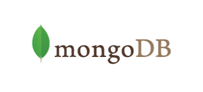
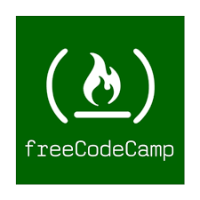

Iván Valero Sánchez
Founder
VS SYSTEMS
Founder
VS SYSTEMS
Para sentirse vivo hay que seguir aprendiendo
Profesional multidisciplinar de desarrollo de software y sistemas en continua formación. Con experiencia de más de 10 años en la empresa privada y ahora estableciendome por mi cuenta.
Amplia experiencia en desarrollo (sobre todo back-end), protocolos de comunicación industrial y en sistemas de todo tipo.
Y ahora Blockchain, cryptomonedas, mineros... Todo ello con la máxima profesionalidad
Entra en VS-SYSTEMS para saber más
| TITULACIÓN SUPERIOR | |
| GRADO EN TECNOLOGÍAS DE LA INFORMACIÓN. Universidad nacional de Educación a distancia. | |
| Ingeniero técnico de informática especialidad Gestión por la Universidad Pontificia de Salamanca. | |
| CERTIFICACIONES | |
|  | Mongo DB developer associate. |
| CURSOS MIRIADAX | |
| Diseño web con HTML 5 y CSS 3. | |
| SEO. Posicionamiento natural en buscadores. | |
| Gestión de proyectos software con Git y GitHub. | |
| Introducción a Linux como entorno de desarrollo de sistemas software. | |
| OTROS | |
|  | Free Code Camp. |